3 Business Activity
3.1 GDP
Key Points:
- Real GDP fell at an annual rate of -2.06% in Santa Barbara County in 2018, compared to a 0.91% increase in 2019.
- The Finance and Insurance industry was the largest contributor to Real GDP in Santa Barbara. The real estate industry was the second largest contributor in 2020 and manufacturing followed with the third largest contribution to real GDP in Santa Barbara.
- Company Management was the fastest increasing industry in 2020, with an increase in GDP contribution of 34.4%.
Real Gross Domestic Product (GDP) measures the value of all goods and services produced within a certain location over a certain period of time. It remains one of the best measures of economic growth and well-being, not only for the nation but also for local areas. Unlike the data on national GDP, data on GDP for Santa Barbara County is only reported annually and at a considerable lag. Typically, we rely on alternative measures to judge the health of our local economy like employment statistics and housing prices, which are released more frequently. However, GDP remains a relevant statistic to determine long-run trends in the county’s economic growth and industry mix. It also allows for a direct comparison to growth in the nation and state.
Real GDP growth in Santa Barbara County for 2020 decreased by 2.06%. This is the first year since 2010 that real GDP growth decreased in Santa Barbara County. From 2012 to 2019, Santa Barbara County had seen growth in real GDP, with the largest increase being 4.96% in 2015. U.S real GDP decreased by 3.4% in 2020, but has since increased by nearly 6% in 2021. This is above and beyond what is typical, illustrating how the economy was able to bounce back after the pandemic. Real GDP also fell in California by 2.76% in 2020, a large decrease from a 3.62% growth in 2019.
Real GDP decreased by 2.5% in 2020 for San Luis Obispo County. From 2010 to 2019, San Luis Obispo has had nine consecutive years of positive real GDP growth rates. Similar to Santa Barbara County, San Luis Obispo experienced its highest growth rate of the past 10 years in 2015, at an increase of 5.1% in 2015. Ventura County experienced a 2.6% decrease in real GDP in 2020. This is the first decrease for Ventura County since 2016, when real GDP decreased by 0.7%.

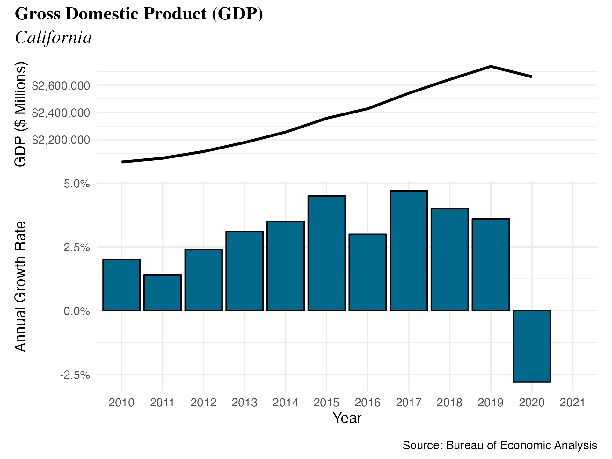

 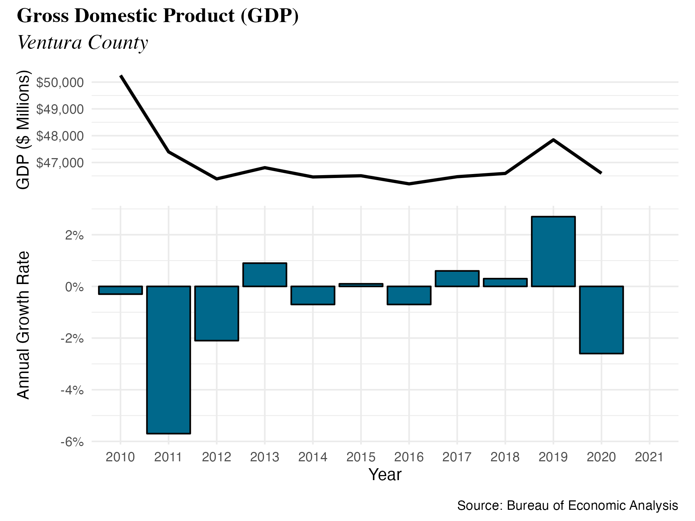
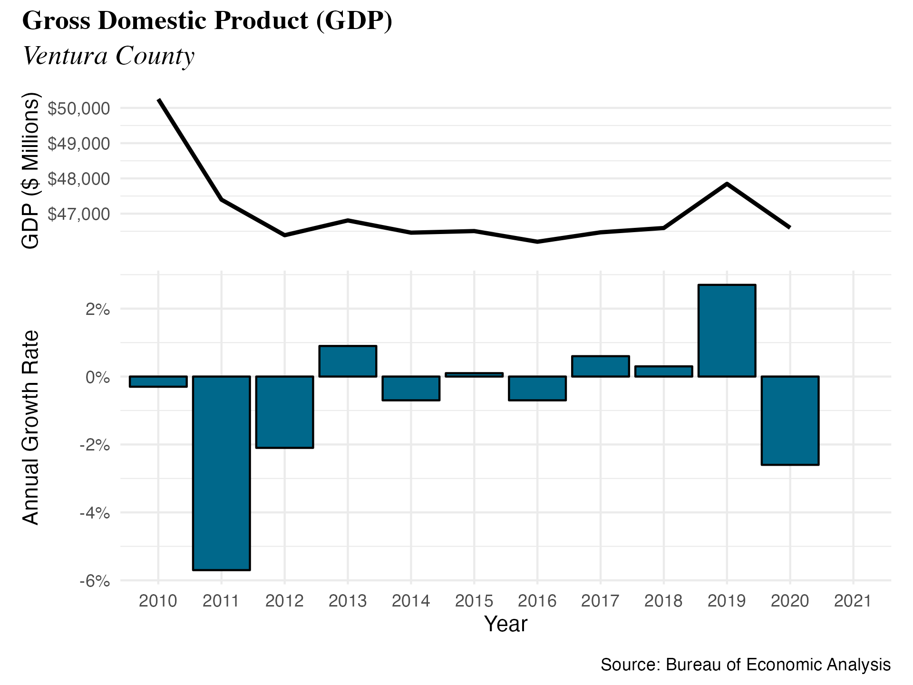
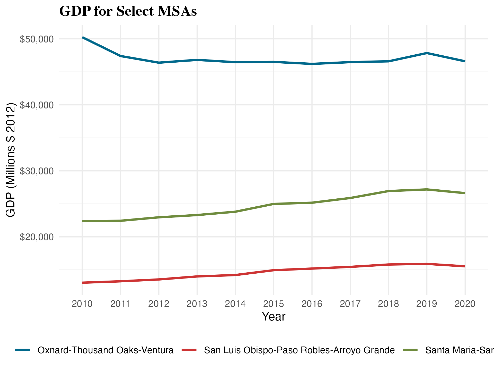
Industry Growth
In Santa Barbara County, the largest five industries in 2020 were Finance, Professional & Business Services, Government, Wholesale Trade, and Real Estate, Manufacturing, Government, and Farming in that order. All of these industries were also part of the five largest industries in 2018, with Finance still leading. Government was the second largest industry in 2018 and Professional & Business Services followed in third.
The fastest growing industry in 2020 was Company Management, which experienced GDP growth of 34.4% from 2019. Companies that fall into this industry are those whose roles include holding securities of other companies in order to influence management, administration and management services, as well as strategic or organizational planning and decision-making. The second-fastest growing industry in Santa Barbara County was Utilities, with GDP growth of 17.2%. Mining had the largest growth rate in 2017, at 55.1%, while in 2020 this industry had the fourth largest growth rate of 10.6%. This illustrates the volatility and cyclicality of the Mining industry. Total Farm had the third largest growth rate in 2020 at 13.9%, and Professional and Business Services had the fifth largest growth rate at 10.0%.
The five industries with the weakest growth in 2020 were Information (-37.6%), Arts (-29.8%), Manufacturing (-28%), Construction (21.5%), and Finance (-18.3%). These are the same five industries with the weakest growth in 2018; however, the decrease in growth was much higher in 2020. In 2018, growth was Information (-5.5%), Arts (-4.1%), Manufacturing (-1%), Construction (0.2%), and Finance (0.5%). It is interesting to note that, even though Finance and Manufacturing were the first and third largest contributors to real GDP in Santa Barbara, they experienced the fifth and third weakest growth in GDP at -18.3% and -28%, respectively.
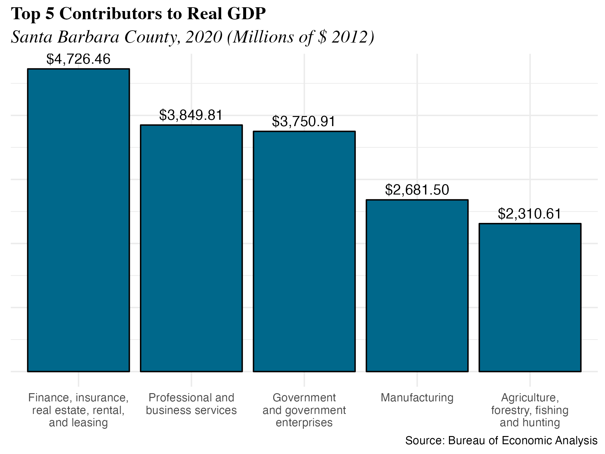
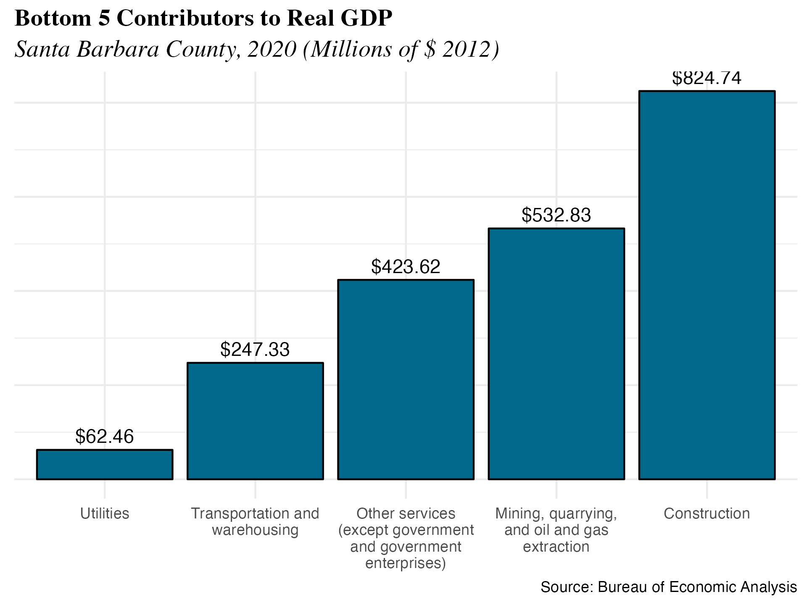
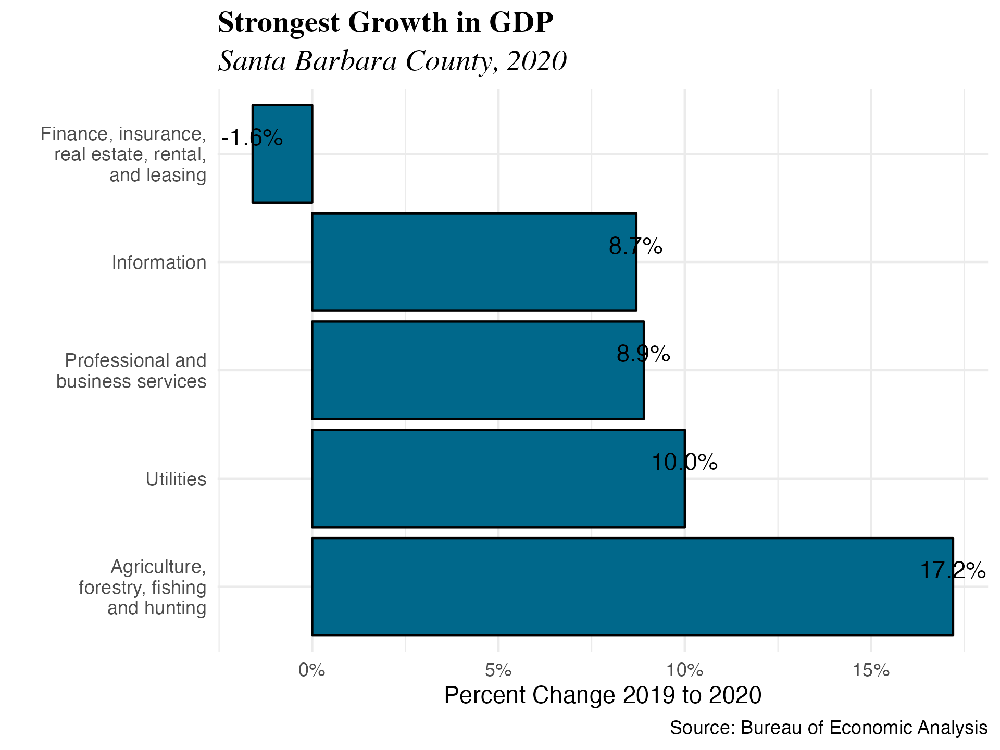
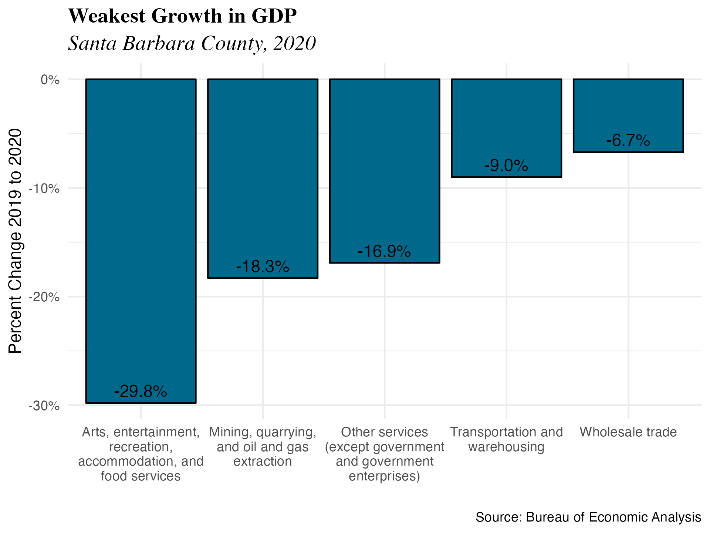
Per Capita GDP
Real GDP per capita for Santa Barbara County in 2020 was $59,415. This was higher than San Luis Obispo County($55,047) and Ventura County ($55,281). Santa Barbara County’s real GDP per capita was higher than that of the United States’ value of $55,415, but it was lower than California’s real GDP per capita of $67,435. In 2020, Santa Barbara County’s real GDP per capita decreased by 2.1%. When comparing growth rates of real GDP per capita with other Metropolitan Statistical Areas (MSAs) in the U.S. in 2020, Santa Barbara County ranks 144 out of 384. This marks a significant fall from 2018, when the county’s ranking was 65. The MSA with the highest per capita GDP growth was Sierra Vista, AZ at 5.29%, while the MSA with the lowest was Kahului, HI at -20.4%.
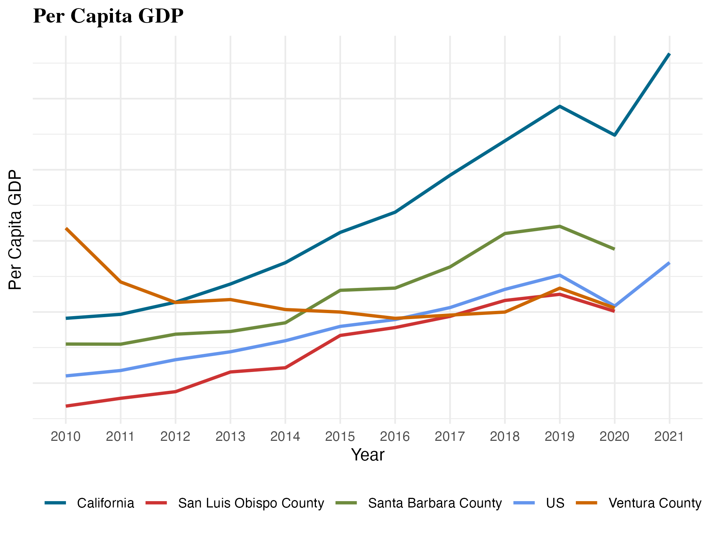
3.2 Prices
Key Points:
- Core inflation, which removes the effects of energy and food prices, increased by 1.4% from January 2020 to January 2021 in the United States, and increased by 0.6% in the Los Angeles Area.
- From January 2021 to January 2022, the Los Angeles Area CPI increased by 2.6% largely over the 2.0% long-term inflation target.
The main measure of inflation is the Consumer Price Index (CPI). This index is calculated by taking the change in prices paid by urban consumers for a fixed basket of goods and services, which is representative of what a typical consumer purchases. In 2022, the CPI for the Los Angeles Area increased by 7.5%. The overall U.S. inflation in 2022 increased by the same percentage, at 7.5%.
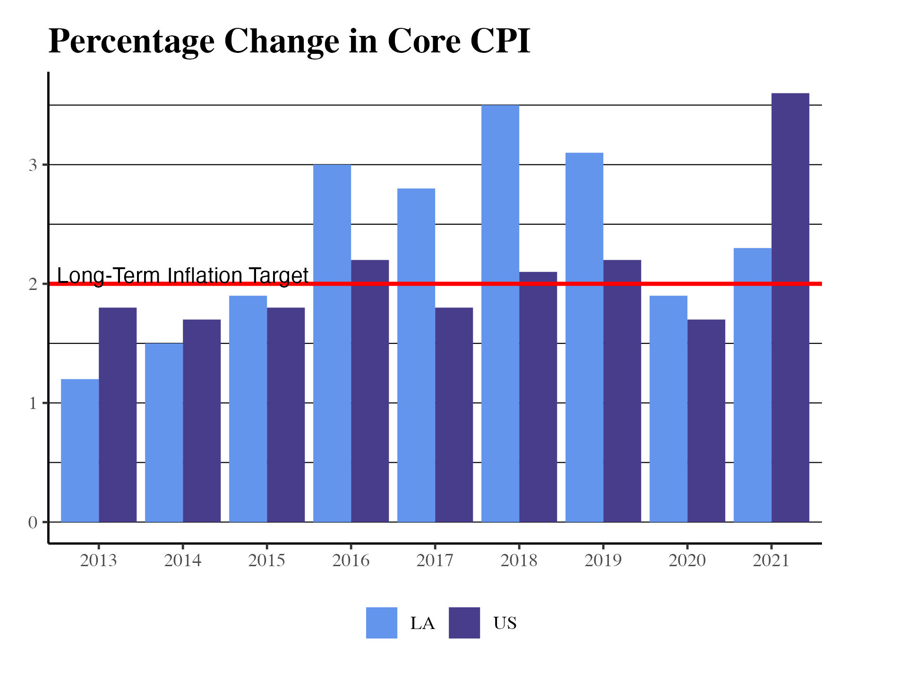
Core CPI is often thought of as the best measure of inflation. It resolves issues and concerns regarding volatility by removing food and energy from the basket of goods and services. By this measure, inflation was 2.3% in the Los Angeles area for 2021. Los Angeles consistently had a higher core CPI than the US for the last several years but did not last year. The core CPI value for the U.S. was 1.3% higher than the value for Los Angeles in 2021. The FED hit their long-term inflation target of 2.0% for the first time in 2016 since 2008. The inflation rate increased drastically in 2021 for Los Angeles, hitting high above the FED’s target. It rose from 1.9% in 2020 to 2.3% in 2021. The FED was highly above their 2.0% benchmark in 2021 with the core CPI for the U.S. being 3.6%.
At the end of 2021, the quarterly percentage change for CPI for energy grew by 5.7% in the Los Angeles Area and 7.2% in the U.S.
 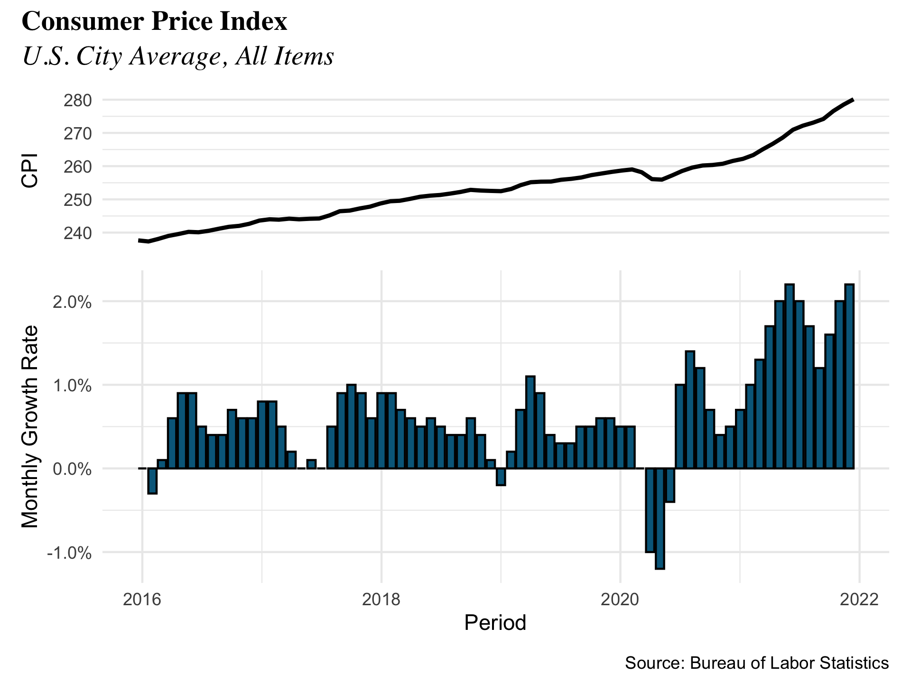
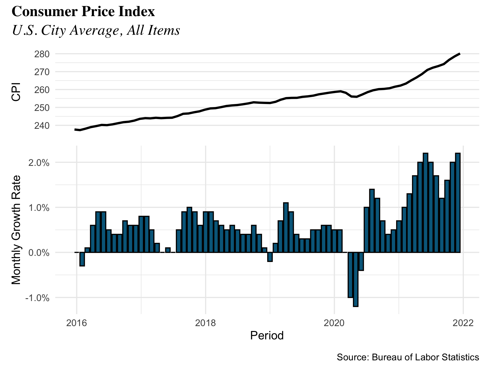
 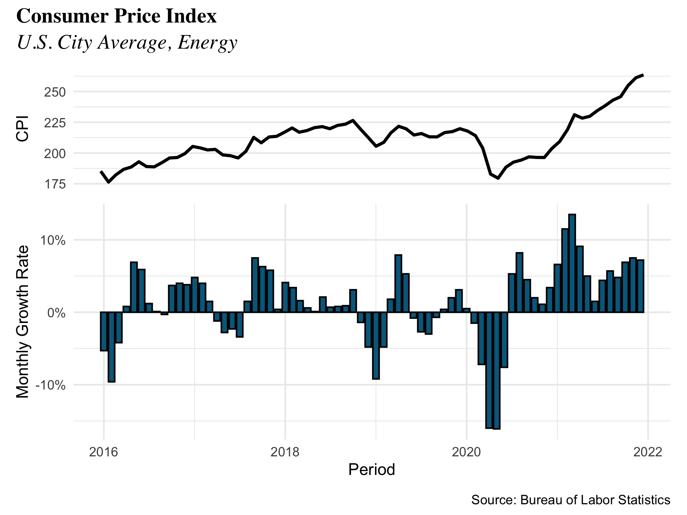
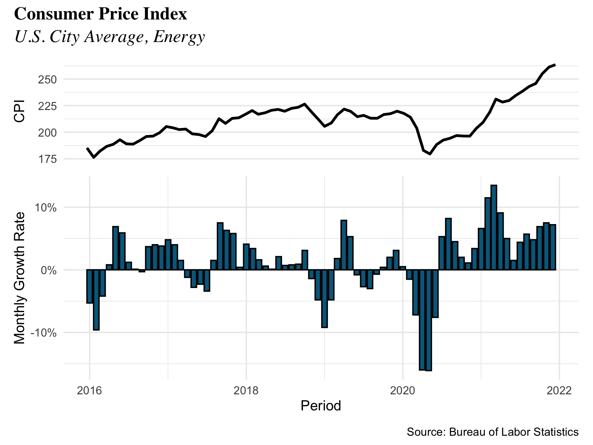
 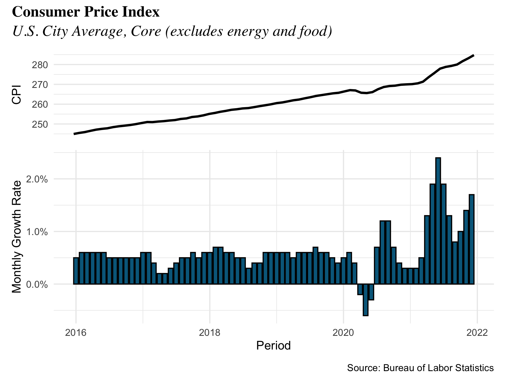
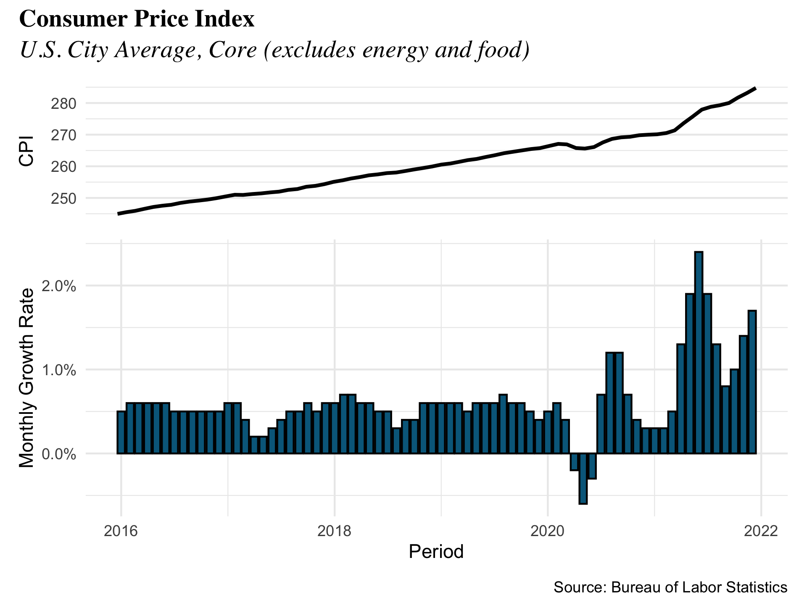
3.2.1 Monetary Policy
After about three years of raising interest rates, the Fed began to lower them in 2019. The overnight funds rate was 2.25%-2.50% in December 2018. The Fed lowered the range for the overnight funds rate to 2%-2.25% in August, 1.75%-2.00% in September, and 1.50%-1.75% in October. The target range for the overnight funds rate stayed at 1.50%-1.75% until March 2020, when it was lowered to 1.00%-1.25%. It was lowered again mid-March to 0%-0.25% and stayed in that range throughout the rest of 2020 and into 2021.
The Taylor Rule, a monetary-policy “rule” that suggests the nominal interest rate be set in response to changes in inflation and output, has decreased in 2019. This is due to the inflation rate being below the Fed’s target level of 2%. Currently, the Taylor Rule suggests nominal interest rates should be about 3-4%. Going forward, if the Taylor Rule is any indication, the fed funds rate should continue to decrease.